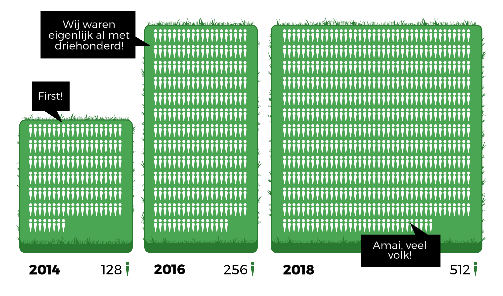

Op de hoogte blijven? Schrijf je in op de mailinglist en volg @fri3dcamp!
{% include mailinglist_social.html %}
{% include cta-contest.html %}
Thema 'robots'
Jan De Coster wordt peter van Fri3d Camp 2018
Met dit thema hopen we deelnemers te inspireren om hun eigen projecten, workshops, … mee te brengen naar Fri3d Camp. Robots krijgen een speciaal plekje tussen alle andere activiteiten, maar we blijven uiteraard inzetten op een divers en gevarieerd programma.
Het thema 'robots' krijgt ook een gezicht: Jan De Coster, hij wordt de peter van Fri3d Camp 2018. Jan is één van de meest creatieve en veelzijdige makers die België rijk is, en is vooral bekend om zijn robots met karakter en persoonlijkheid.
{% include slideshow.html %}
Fri3d Camp Groeit
In 2016 hadden we 256 deelnemers. Het dubbele van de eerste editie in 2014, maar dan nog waren we heel snel volzet. In 2018 willen we het aantal deelnemers nog eens verdubbelen en gaan we voor 512 deelnemers.

Van 27 deelnemers in 2014 tot 29 bij de volgende editie.
Meer mensen, zelfde sfeer
Ook in 2018 zorgen we voor dezelfde fijne Fri3d sfeer! Waarschijnlijk zelfs dubbel zo fijn. Stap dus opnieuw binnen in die parallelle wereld vol wetenschap, technologie en verwondering. Met natuurlijk veel, heel veel lichtjes.
We moeten helaas afscheid nemen van De Hoge Rielen, waar het allemaal begon. Met 512 deelnemers hebben we nieuwe uitdagingen waardoor we niet meer terecht kunnen op onze oude locatie. Daarom zal Fri3d Camp 2018 plaatsvinden op domein De Kluis in Sint-Joris-Weert.